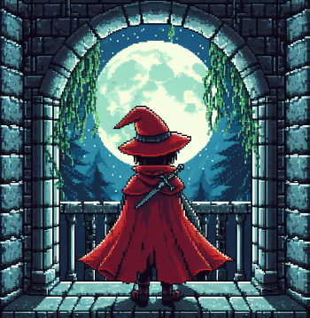
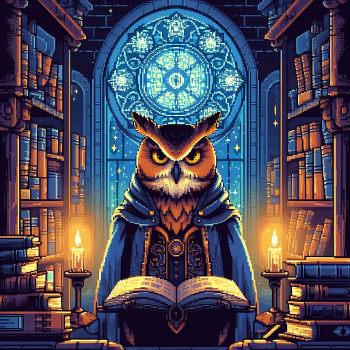
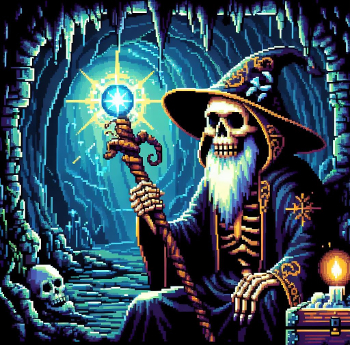
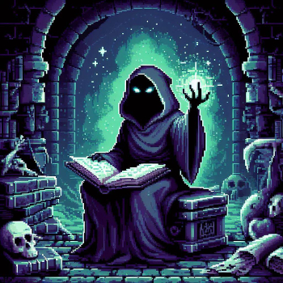
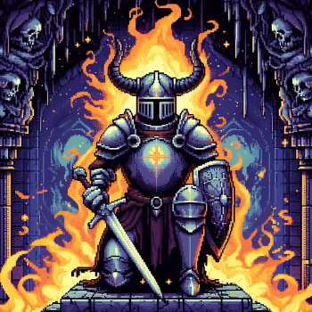

Em uma noite de lua cheia, Ismael, o Explorador, sentiu um chamado misterioso ecoar em sua mente inquieta. Movido pela curiosidade e pelo desejo de descobrir os segredos ocultos de sua própria alma, ele decidiu embarcar em uma jornada mística pela labiríntica masmorra de sua própria mente.
Ao adentrar nesse reino interior, Ismael se viu imerso em um mundo de símbolos e mistérios, onde cada passo era uma descoberta e cada encontro era uma lição de sabedoria. Ele encontrou Maria, a Coruja Sábia, cujos olhos penetrantes lançaram luz sobre os mistérios da noite e o guiaram através das sombras do desconhecido.
Continuando sua jornada, Ismael encontrou Jubileu, o Assassino, cuja presença trevosa lançou uma revelação sobre seu caminho, lembrando-o das escolhas que moldam o destino de um humano. Ao lado de Joana, a Aventureira, Ismael explorou os recantos mais profundos de sua própria coragem e determinação, descobrindo que a verdadeira aventura reside na jornada do autoconhecimento.
Enquanto avançava, Ismael encontrou Isaac, o Observador, cujos olhos perspicazes capturaram cada detalhe de sua jornada, registrando cada experiência como um testemunho da vida e da passagem do tempo. Com Tiago, o Druida, Ismael se conectou com as forças da natureza e descobriu a harmonia que existe entre o humano e o universo.
Ulrich, o Anão Barba Ruiva, o presenteou com a força e a determinação necessárias para superar os desafios que surgiam em seu caminho, enquanto Sofia, a Encantadora, despertou nele a magia da imaginação e o poder dos sonhos.
Entre os corredores escuros, Ismael descobre também uma vasta biblioteca repleta de livros antigos e artefatos enigmáticos. Cada volume conta uma história única, desde o "Livro dos Símbolos Ocultos", que revela os segredos do universo através de símbolos e metáforas, até o "Talismã da Caveira de Sócrates", que confere sabedoria e discernimento aos corajosos o suficiente para desvendar seus mistérios.
À medida que Ismael avançava em sua jornada, ele se viu confrontado com desafios e tentações, mas também com a promessa de redenção e transformação. No final de sua jornada, ele emergiu da masmorra de sua mente não apenas como um explorador, mas como um sábio, pronto para compartilhar as lições que aprendera com aqueles que ousavam seguir seus passos rumo ao desconhecido.